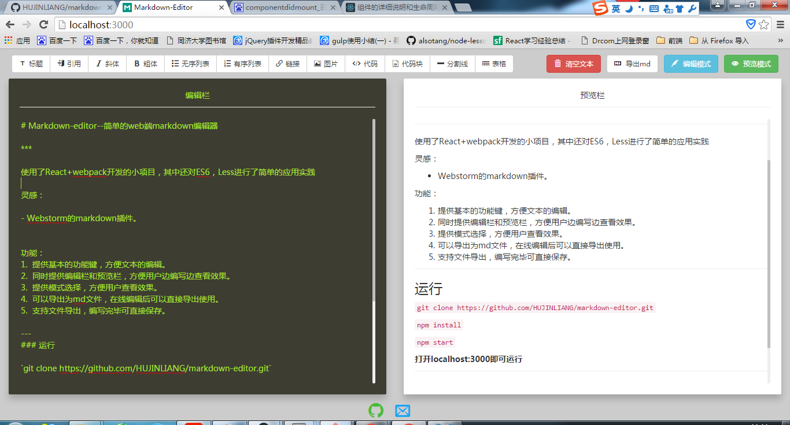

Markdown-editor--简单的web端markdown编辑器
使用了React+webpack开发的小项目，其中还对ES6，Less进行了简单的应用实践
灵感：
- Webstorm的markdown插件。
功能：
- 提供基本的功能键，方便文本的编辑。
- 同时提供编辑栏和预览栏，方便用户边编写边查看效果。
- 提供模式选择，方便用户查看效果。
- 可以导出为md文件，在线编辑后可以直接导出使用。
- 支持文件导出，编写完毕可直接保存。
运行
git clone https://github.com/HUJINLIANG/markdown-editor.git
npm install
npm start
打开localhost:3000即可运行
ScreenShots

项目demo：Markdown-editor
后期可能进行扩展的功能
- 用户登录：用户可进行登录（第三方登录，如qq,github等等）。
- 文件存储：用户登录后可以将文件存储至数据库中。